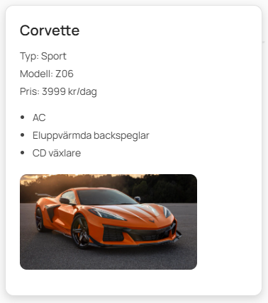

Typografi
WigellRentals använder typsnittet Manrope för all text i applikationen. Rubriker och brödtext ska användas konsekvent för att skapa tydlig hierarki och god läsbarhet.
Typsnitt
Typsnittet laddas in via Google Fonts och används globalt i hela applikationen.
<link
href="https://fonts.googleapis.com/css2?family=Manrope:wght@300;400;500;600;700&display=swap"
rel="stylesheet"
/>
Global typografi (CSS)
:root {
font-family: 'Manrope', sans-serif;
line-height: 1.5;
font-weight: 400;
color: #222;
background-color: #ffffff;
text-rendering: optimizeLegibility;
-webkit-font-smoothing: antialiased;
-moz-osx-font-smoothing: grayscale;
}
Rubriker
H1 – Sidrubrik
Används för sidans huvudsakliga rubrik.
H2 – Sektion
Används för större innehållssektioner.
H3 – Underrubrik
Används för att dela upp innehåll inom en sektion.
H4 – Mindre rubrik
Används för mindre rubriker eller informationsblock.
Brödtext
Detta är ett exempel på brödtext i Wigells designsystem. Brödtext ska vara lättläst och användas för längre textstycken.
Rubrik- och textstorlekar (CSS)
h1 {
font-size: 32px;
font-weight: 700;
}
h2 {
font-size: 24px;
font-weight: 600;
}
h3 {
font-size: 18px;
font-weight: 600;
}
h4 {
font-size: 15px;
font-weight: 500;
}
p {
font-size: 14px;
font-weight: 400;
line-height: 1.5;
color: #555;
}
Färgschema
WigellRentals använder ett begränsat och konsekvent färgschema baserat på CSS-variabler. Färgerna används för att skapa tydlig visuell hierarki, signalera status och säkerställa en enhetlig design i hela applikationen.
Primära färger
#0077cc
#ffffff
Den primära färgen används för navigering, länkar och funktionsknappar. Sekundär färg används som bakgrund, neutrala ytor och knappar.
Statusfärger
#2ecc71
#e74c3c
Statusfärger används för att signalera positiva eller negativa händelser, till exempel vid efitering eller radering.
CSS-variabler
:root {
--primary: #0077cc;
--primary-hover: #005fa3;
--success: #2ecc71;
--danger: #e74c3c;
--info: #0077cc;
--bg: #ffffff;
--card-bg: #ffffff;
--border: #e2e2e2;
--border-dark: #ccc;
--text: #222;
--text-muted: #555;
}
Knappar
WigellRentals använder ett konsekvent knappsystem för att tydligt visa olika typer av åtgärder. Knappar delas upp i standardknappar, funktionsknappar samt positiva och negativa åtgärder.
Exempel
JSX-struktur / HTML
<button class="btn">Standard</button>
<button class="btn btn-function">Skriv ut</button>
<button class="btn btn-positive">Spara</button>
<button class="btn btn-negative">Ta bort</button>
Grundläggande knappstil (CSS)
button,
.btn {
padding: 8px 14px;
border-radius: 6px;
font-family: inherit;
font-size: 14px;
cursor: pointer;
border: 1px solid #ccc;
background: #ffffff;
transition: 0.2s ease;
}
button:hover,
.btn:hover {
background: #f2f2f2;
}
Funktionsknappar
.btn-function {
background-color: #0077cc;
color: #ffffff;
}
.btn-function:hover {
background-color: #005fa3;
}
Positiva och negativa åtgärder
.btn-positive {
background: #2ecc71;
border-color: #2ecc71;
color: #0d4d3f;
}
.btn-negative {
background: #e74c3c;
border-color: #e74c3c;
color: #0d4d3f;
}
CSS – Action-knappar
.action-btn {
padding: 7px 14px;
border-radius: 8px;
font-size: 14px;
font-weight: 600;
border: none;
cursor: pointer;
display: inline-flex;
align-items: center;
gap: 6px;
transition: 0.2s ease;
}
.edit-btn {
background: #38d6a7;
color: #0d4d3f;
}
.edit-btn:hover {
background: #2bbd92;
}
.return-btn {
border: 1px solid #ccc;
background: #ffffff;
}
.return-btn:hover {
background: #f2f2f2;
}
.delete-btn {
background: #ff7a7a;
color: #0d4d3f;
}
.delete-btn:hover {
background: #e86666;
}
Tabeller
Tabeller används i WigellRentals för att visa administrativa listor, exempelvis bokningar, användare och bilar. Två huvudtyper används: tabeller för längre listor samt tabeller med många kolumner.
Lång lista
| ID | Namn | Status |
|---|---|---|
| 1 | Bokning A | Aktiv |
| 2 | Bokning B | Avslutad |
Många kolumner
| ID | User | Car | From | To | Status |
|---|
JSX-struktur
<table class="admin-table">
<thead>
<tr>
<th>ID</th>
<th>Namn</th>
<th>Status</th>
</tr>
</thead>
<tbody>
<tr class="row-even">
<td>1</td>
<td>Bokning A</td>
<td>Aktiv</td>
</tr>
<tr class="row-odd">
<td>2</td>
<td>Bokning B</td>
<td>Avslutad</td>
</tr>
</tbody>
</table>
Många kolumner
Tabeller med många kolumner används i admin-vyer där flera attribut behöver visas samtidigt.
<table class="admin-table">
<thead>
<tr>
<th>ID</th>
<th>User ID</th>
<th>Användarnamn</th>
<th>Bil</th>
<th>Från</th>
<th>Till</th>
<th>Aktiv</th>
<th>Alternativ</th>
</tr>
</thead>
</table>
CSS – Tabellstil
.admin-table {
width: 100%;
border-collapse: collapse;
margin-top: 25px;
background: #ffffff;
color: #222;
font-size: 15px;
border-radius: 10px;
overflow: hidden;
box-shadow: 0 4px 14px rgba(0, 0, 0, 0.08);
}
.admin-table th {
padding: 14px 18px;
background: #f5f6fa;
font-weight: 600;
border-bottom: 2px solid #ececec;
cursor: pointer;
}
.admin-table td {
padding: 14px 18px;
border-bottom: 1px solid #efefef;
}
.row-even {
background: #ffffff;
}
.row-odd {
background: #fafafa;
}
.admin-table tr:hover {
background: #f0f4ff;
}
Action-knappar i tabeller
Action-knappar används i tabeller för redigering, återställning och borttagning av poster.
<button class="edit-btn">Redigera</button>
<button class="return-btn">Returnera</button>
<button class="delete-btn">Ta bort</button>
Formulär
Formulär används i WigellRentals för inloggning, registrering och administrativa åtgärder. Samtliga formulär följer samma visuella struktur med tydliga etiketter, luft mellan fält och tydliga åtgärdsknappar.
Struktur
Formulär placeras oftast i ett kort (card) för att tydligt avgränsa innehållet från resten av sidan.
Logga in
JSX-struktur
<div className="register-wrapper">
<div className="card register-box">
<h2>Skapa konto</h2>
<form>
<label>Förnamn</label>
<input />
<label>Efternamn</label>
<input />
<label>Användarnamn</label>
<input />
<label>Email</label>
<input type="email" />
<label>Lösenord</label>
<input type="password" />
<button className="register-btn">
Skapa konto
</button>
<button className="register-cancel-btn">
Avbryt
</button>
</form>
</div>
</div>
CSS – Layout & formulär
.register-wrapper {
display: flex;
justify-content: center;
padding-top: 60px;
}
.register-box {
width: 380px;
padding: 30px;
}
.register-box form {
display: flex;
flex-direction: column;
gap: 14px;
}
.register-box label {
font-size: 14px;
font-weight: 500;
color: #444;
}
CSS – Inputfält
.register-box input {
padding: 10px 12px;
border-radius: 8px;
border: 1px solid #c9c9c9;
font-size: 14px;
transition: 0.2s;
}
.register-box input:focus {
border-color: #3a7afe;
box-shadow: 0 0 0 2px rgba(58, 122, 254, 0.2);
}
CSS – Knappar i formulär
.register-btn {
padding: 12px;
background: #3a7afe;
border: none;
color: white;
border-radius: 8px;
font-weight: 600;
}
.register-btn:hover {
background: #2f63d4;
}
.register-cancel-btn {
background: #ffffff;
border: 1px solid #ccc;
color: #444;
border-radius: 8px;
font-weight: 600;
}
.register-cancel-btn:hover {
background: #f2f2f2;
}
Meddelanden
WigellRentals använder webbläsarens inbyggda JavaScript-alerts för att visa felmeddelanden och bekräftelser vid kritiska åtgärder.
Alert
Confirm
alert('Ett fel uppstod');
confirm('Är du säker?');Kort / Cards
Cards används i WigellRentals för att presentera information. Komponenten visar tex. bilinformation, bild och en åtgärdsknapp.
Utseende

JSX-struktur
<div className="card car-card">
<h2>{car.name}</h2>
<p>Typ: {car.type}</p>
<p>Modell: {car.model}</p>
<p>Pris per dag: {car.price} kr</p>
<p>
Totalt pris: <b>{totalPrice} kr</b>
({totalDays} dagar)
</p>
{car.image && (
<img
src={`data:image/jpeg;base64,${car.image}`}
alt={car.name}
/>
)}
<button className="book-btn">
Boka
</button>
</div>
CSS
.car-card {
width: 380px;
background: #ffffff;
border: 1px solid #e2e2e2;
border-radius: 12px;
padding: 20px;
box-shadow: 0 4px 12px rgba(0, 0, 0, 0.15);
}
.car-card:hover {
transform: translateY(-12px);
}
.book-btn {
background: #3a7afe;
color: white;
border-radius: 8px;
padding: 10px 16px;
}
Laddningsindikator
Laddningsindikatorn används i WigellRentals för att visa att data hämtas eller att en åtgärd pågår.
Utseende
HTML
<div class="loader"></div>CSS
.loader {
width: 36px;
height: 36px;
border-radius: 50%;
border: 4px solid #ddd;
border-top: 4px solid var(--primary);
animation: spin 0.9s linear infinite;
}
@keyframes spin {
to {
transform: rotate(360deg);
}
}
Navigation
WigellRentals använder en vertikal navigation i vänsterspalten. Navigationen visar olika länkar beroende på om användaren är inloggad samt om användaren har administratörsbehörighet.
Utseende
JSX-struktur
<nav className="nav-container">
<ul>
<li>
<Link to="/">Hem</Link>
</li>
<li>
<Link to="/cars">Våra bilar</Link>
</li>
{isLoggedIn && (
<>
<li><Link to="/bookings">Bokningar</Link></li>
<li><Link to="/bookcar">Boka en bil</Link></li>
<li><Link to="/userprofile">Min Profil</Link></li>
</>
)}
{isAdmin && (
<>
<li><Link to="/admin/users">Admin – Användare</Link></li>
<li><Link to="/admin/cars">Admin – Bilar</Link></li>
<li><Link to="/admin/bookings">Admin – Bokningar</Link></li>
</>
)}
</ul>
</nav>
CSS – Navigation
.layout-nav {
padding: 20px 10px;
border-right: 1px solid #e0e0e0;
background-color: white;
}
.layout-nav ul {
list-style: none;
padding-left: 20px;
margin: 0;
}
.layout-nav li {
margin: 14px 0;
transition: transform 0.25s ease;
}
.layout-nav li:hover {
transform: translateX(6px);
}
.layout-nav a {
position: relative;
display: inline-block;
padding: 3px 0;
text-decoration: none;
color: #313131;
font-weight: 500;
}
.layout-nav a::after {
content: '';
position: absolute;
left: 0;
bottom: -3px;
height: 2px;
width: 0;
background: #000;
transition: width 0.25s ease;
}
.layout-nav a:hover::after {
width: 100%;
}
CSS – Hover-effekt
.layout-nav a::after {
width: 0;
transition: width 0.25s ease;
}
.layout-nav a:hover::after {
width: 100%;
}